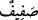
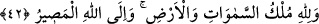

“Göklerde ve yerde bulunanlarla dizi dizi” kanatlarını havada açıp sıra olan
“kuşların Allah’ı tesbih ettiklerini görmez misin?”
Buradaki soru takrîr/pekiştirme içindir. “Görmek”ten maksad, kalbin görmesidir.
Çünkü peşi sıra zikredilen tesbîh, gözle görülecek bir şey değildir.
Yâni ey Muhammed! Vahiy veya istidlâl yoluyla kuvvet ve yakîn bakımından gözle
görmeye benzer bir ilimle bildin ki akıllı veya akılsız bütün göklerin ve yerin halkı,
zâtı, sıfatları ve fiilleri konusunda Allah’ı şânına lâyık olmayan her türlü noksanlık ve
âfetlerden dâimî olarak tenzih ederler.
“
”, “
”in çoğuludur. “
”, havada uçan her türlü kanatlı varlığa verilen bir
isimdir. Yerde bulunanlara dâhil olduğu halde kuşların özel olarak zikredilmesi, onun
yerde bulunan diğer canlılar gibi belli bir istikrarının olmaması sebebiyledir. Çünkü
kuşlar genellikle gökle yer arasında bulunurlar.
“
” kelimesinin asıl mânâsı açmak, yaymak demektir. Bu sebeple yayılıp
kurutulmuş ete “
” denir.
Gökler ve yerde bulunanların “her biri” Allah Teâlâ’nın ilhâmıyla “kendi duâsını ve
tesbihini” Allah’ı tenzih etmeyi “(öğrenmiş) bilmiştir.” “
” fiilinin “
(öğretildi)”
şeklinde de okunması, bunun Allah’ın ilhâmı ile olduğunu açıklamaktadır.
“Allah, onların yapmakta olduklarını hakkıyla bilir.” Yâni onların yaptıkları tâat,
duâ ve tesbihleri bilir ve buna göre onlara karşılık verir. Burada insan ve cin kâfirlerine
tehdid vardır. Çünkü onların gönüllü ve irâdeli hiçbir tesbihleri yoktur.
42. Göklerin ve yerin mülkü Allah’ındır; dönüş de ancak O’nadır.
“Göklerin ve yerin mülkü” başkasına değil, sadece “Allah’a âiddir.” Çünkü onları
ve onlarda bulunan zatları ve sıfatları yaratan yalnız O’dur. Var etme, yok etme, ilk
olarak ve tekrar yaratma bakımından onların tümünde yegâne tasarruf edici O’dur.
“Dönüş” yâni bütün mahlûkâtın yok olup yeniden diriltilmekle dönüşü “ancak
Allah’adır.”
Akıllıya gereken böyle güçlü bir Mâlik’e kulluk etmek ve O’nu hem maddi hem de
manevî dille tesbîh etmektir. Bazılarına göre bu tesbih, söz lisânıyla yapılana
hamledilir. Çünkü el-Kevâşî’de belirtildiği üzere akılsız varlıklar için de, mahiyetini
Allah ve dilediği kullardan başka kimsenin bilmediği hakîkî bir tesbîhin olması câizdir.
Nitekim buna yer verilir. İsrâ sûresinin “O’nu övgü ile tesbih etmeyen hiçbir şey
yoktur.” (el-İsrâ, 17/44) âyetinde bu konu güzelce açıklanmıştı. Oraya müracaat et ve
faydalan.